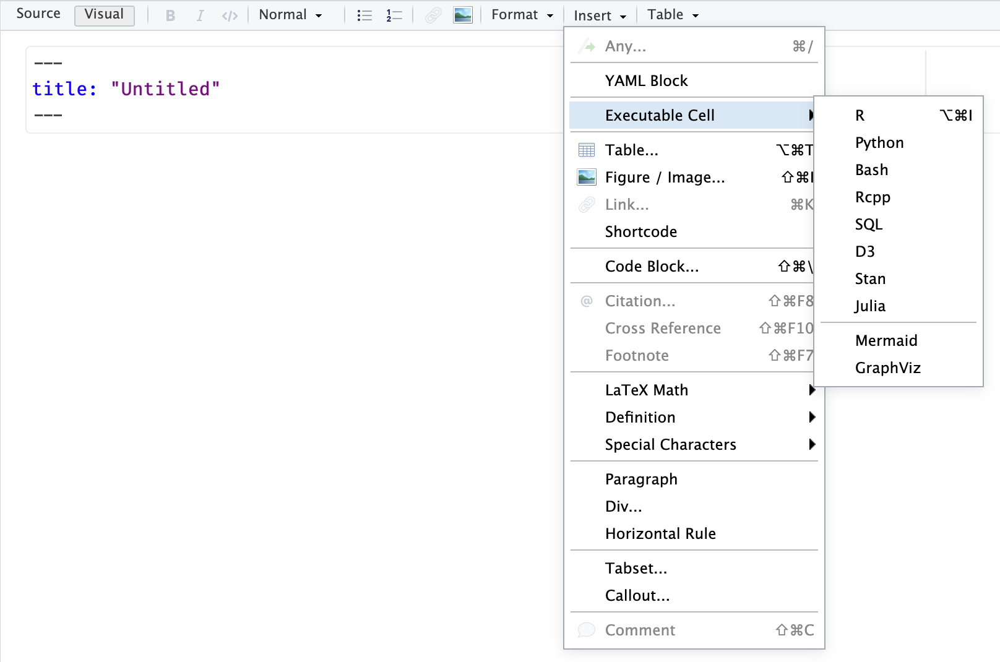
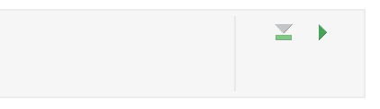

{r}
a <- 1 + 6Quarto Documents
Class 7
The main objective of this class is to learn how to use Quarto Documents to create an HTML report that contains data visualizations and statistical analyses.
Prepare
Before starting this class:
🛠️ Install the latest version of Quarto
Quarto documents are a versatile way to create production quality articles, presentations, dashboards, websites, blogs, and books in HTML, PDF, MS Word, ePub, and more. In fact, this R Workshop was created using Quarto documents.
In this class, you will learn how to use Quarto documents to create an HTML report that contains data visualizations and statistical analyses. View a sample report to see an example of this kind of document.
R Scripts vs. Quarto Documents
R scripts are for processing data
Quarto documents are for generating reports that contain figures, tables, and statistical analyses
Tip
You may want to watch this video for a brief intro to Quarto
To open a Quarto document:
File -> New File -> Quarto Document…
Click Create Empty Document
There are three types of content that form the structure of a Quarto document.
A YAML header
Markdown formatted text
R code chunks
YAML Header
The YAML header contains metadata about how the document should be rendered and the output format. It is located at the very top of the document and is surrounded by lines of three dashes.
---
title: "Title of document"
format: html
---There are various metadata options you can specify, such as if you want to include a table of contents. To learn about a few of them see the documentation here.
For generating a report document I typically like to use the following YAML options:
---
title: "Document Title"
author: Your Name
date: today
theme: default
format:
html:
code-fold: true
code-tools: true
code-link: true
toc: true
toc-depth: 1
toc-location: left
page-layout: full
df-print: paged
execute:
error: true
warning: true
self-contained: true
editor_options:
chunk_output_type: console
---I am not going to cover what all these options do - I describe some of them below in the Additional Elements section
Markdown Text
The markdown text section is just as if you were writing content in Microsoft Word or Google Docs. You can write up paragraphs of text, create bullet or numbered lists, embed images or web links, create tables, and more.
The text is formatted using a language known as Markdown. Markdown is a convenient and flexible way to format text. When a Markdown document is rendered into some output (such as HTML or PDF), the text will be formatted as specified by Markdown syntax.
There are a lot of guides on how to use Markdown syntax. I will not cover this so you should check them out on your own. Here is one I reference often: Markdown Cheatsheet
Add some markdown text below the YAML header in your open Quarto document
Here is some sample text with a numbered list
1. This is first
2. Second
3. ThirdR Code Chunks
A Quarto document (.qmd) is a mixture of markdown text and R code chunks.
Create an R code chunk
R code chunks are enclosed with
```{r}
a <- 1 + 6
```Or might look like:
You can create R code chunks with the shortcut:
Mac: ⌘ ⌥ i (command + alt/opt + i)
Windows: ⌃ ⌥ i (ctrl + alt + i)
Or in the toolbar of the Quarto document (same section area as Source and Visual)
Insert -> Excecutable Cell -> R

Notice that there are a lot of other options to Insert all sorts of other content like Figure/Image…
Insert the following code in the R code chunk
library(palmerpenguins)
head(penguins)Create another R code chunk with the following code
library(ggplot2)
ggplot(penguins, aes(species, body_mass_g, color = species)) +
geom_jitter(alpha = .7, width = .05, color = "gray") +
geom_point(stat = "summary", fun = mean, na.rm = TRUE, size = 3) +
geom_errorbar(stat = "summary", fun.data = mean_cl_normal, na.rm = TRUE,
width = .2) +
scale_color_brewer(palette = "Set1", label = "none") +
guides(color = "none") +
labs(title = "Body Mass of Penguin Species",
x = "Species", y = "Body Mass (g)") +
theme_classic()Execute R code chunk
To run chunks of R code you can click on the green “play” button on the top right of the R code chunk.

Go ahead and do so. You can see that the results of the R code chunks are now displayed in the document.
Visual Editor
By default, Quarto will open a new document in the visual editor mode. The Quarto visual editor provides a WYSIWYM editing interface.
In Source mode, you will see the raw markdown and code elements. On occassion you may find that it is easier to edit a document in Source mode rather than with the Visual editor. You can switch back and forth between the two easily at the top-left of the toolbar

Render Document
When you have finalized the content of a Quarto document you will then want to generate the document into the specified output format (e.g., HTML).
To render a Quarto document click on Render at the top. This will
- Generate a preview of the document in the Viewer pane
- Create an HTML file
Go ahead and render the document you just created. Find the generated HTML file and open it. You will notice that it will open in your default web browser.
There are some advantages to using an HTML format:
Easily shareable, anyone can open it in a web browser (does not require some other application that might cost money like Microsoft Word)
Can include elements like
Table of contents
Tabs - can include a lot more content without taking up a lot of space and saves on scrolling through large documents
Code folding - code chunks can be toggled to hide/show them
Code download - link to download the Quarto document
CSS styling
and more
Let’s take a look at some of these elements and more
Additional Elements
Headers
Headers are a great way to organize the content in a Quarto document. Use # to create different header levels:
# This is a level 1 header
## A level 2 header
### And level 3 headerHeaders become even more useful with a table of contents and using tabs
Table of Contents
A table of contents is useful to navigate longer documents. It also provides an outline for the viewer to understand the document. You can specify the table of contents layout in the YAML header:
format:
html:
toc: true
toc-depth: 1
toc-location: lefttoc-depth will change how many header levels are displayed in the table of contents (toc).
Tabs
Tabs are a great way to add a lot of content while avoiding having to scroll endlessly through a large document. The syntax for a tabset is
::: panel-tabset
## First tab
Here is some content
## A second tab
More content!
## And third tab
Hello!
:::The second level headers will be used to label the tabs in the document (see below)
You can also add multiple tabs easily by going to
Insert -> Tabset…
Tabs look like this:
Here is some content
More content!
Hello!
Code Tools
You can include a Code menu in the header of your document that provides various tools for readers to interact with the source code. Specify in the YAML
code-tools: trueCode Folding
You may not always want to show the R code chunks in the HTML output. Or you might want to give the viewer a choice to show/hide R code chunks. You can specify code folding in the top-level YAML header or in each code chunk individually
code-fold: true| Value | Behavior |
|---|---|
false |
No folding (default) |
true |
Fold code (initially hidden) |
show |
Fold code (initially shown) |
R Chunk Options
Some settings you can change for individual R code chunks. The syntax to do this uses #| in the R code chunk:
Hide the code!
```{r}
#| eval: false
#| warning: false
#| message: false
#| code-fold: show
#| code-summary: "Hide the code!"
1 + 1
```Some commone ones to change are:
| Option | Description |
|---|---|
eval |
Evaluate the code chunk (if false, just echos the code into the output). |
echo |
Include the source code in output |
output |
Include the results of executing the code in the output (true, false, or asis to indicate that the output is raw markdown and should not have any of Quarto’s standard enclosing markdown). |
warning |
Include warnings in the output. |
error |
Include errors in the output (note that this implies that errors executing code will not halt processing of the document). |
include |
Catch all for preventing any output (code or results) from being included (e.g. include: false suppresses all output from the code block). |
See the Quarto Documentation for more details
CSS Styling
You can also add CSS styling, either as a separate .css document or at the end of the Quarto document.
For instance, here are some of the styling options I used in the sample report:
.tab-content {
border-style: none;
}
h1 {
color: #005098;
}
h2 {
color: #96834a !important;
font-weight: 600 !important;
}
a {
color: #005098;
}
a:hover {
color: #96834a !important;
}